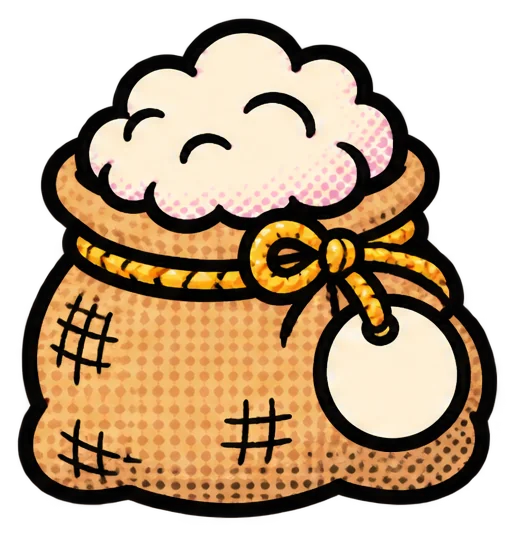
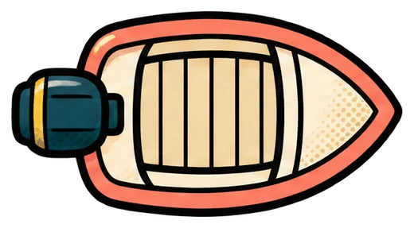
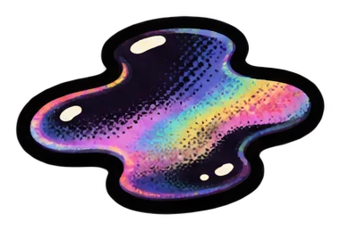

Mujeres rurales de Aysén lavan y limpian la lana
Rebaño al Rescate
Aparecieron manchas en la bahía. Ayuda a la capitana a contenerlas con barreras de lana patagónica.
Cómo se juega

En el muelle, las mujeres rurales cargan la lancha con lana limpia.
Arrastra el dedo o el mouse (o usa las flechas): con lana a bordo, la lancha tiende una barrera.
Rodea una mancha con la barrera para contenerla. Dos a la vez suman combo.
Partida de 60 segundos
Proyecto apoyado por Corfo